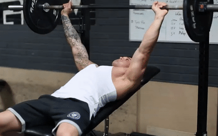
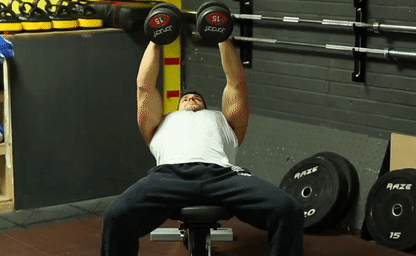

CHEST

NutroFit

Barbell Bench Press
Lay flat on the bench with your feet on the ground. With straight arms unrack the bar.
Lower the bar to your mid chest.
Raise the bar until you've locked your elbows.

Incline Bench Press
Position the bench between 30 and 45 degrees.
Raise one dumbbell and twist your forearm until it is vertical and your palm faces the shoulder.Lay flat on the bench with your feet on the ground. With straight arms unrack the bar.
Lower the bar to your mid chest.
Raise the bar (slowly and controlled) until you've locked your elbows.

Dumbbell Incline Flys
Lay flat on the bench and place your feet on the ground.
Begin the exercise with the dumbbells held together above your chest, elbows slightly bent.
Simultaneously lower the weights to either side.
Pause when the weights are parallel to the bench, then raise your arms to the starting position.